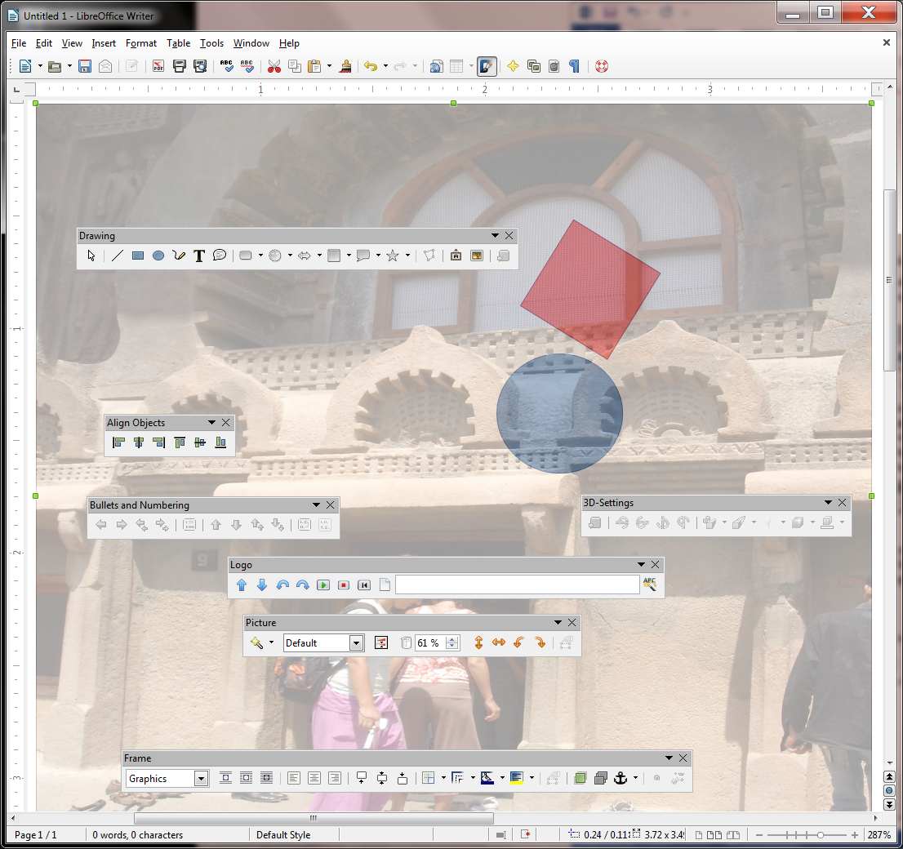
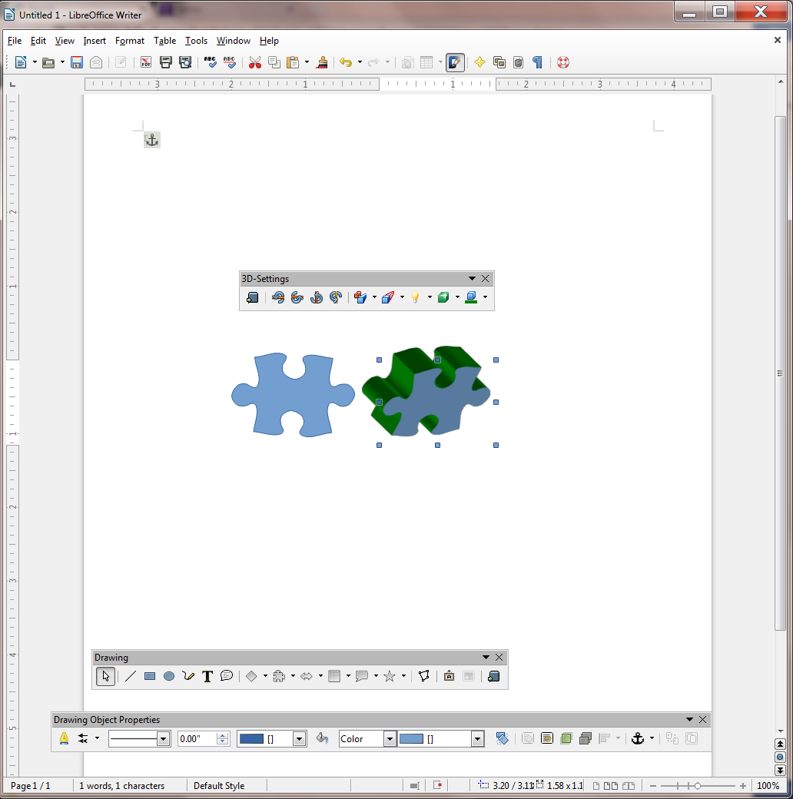

Lesson 3 The LibreOffice Drawing Tools¶
3 The LIBREOFFICE Drawing Tools
LEARNING OUTCOMES
Lesson 3 will cover the following:
- Drawing, moving, rotating, resizing, and otherwise editing simple shapes and lines
- AutoShapes
- Selecting one or more objects at once—overlapping, ordering, aligning, and rotating objects
- Using colors, patterns, and other visual effects
- Grouping and ordering objects
- Using Fontwork
3.1 GETTING STARTED
Setting up for the tutorial
If you completed Lesson 1 of these tutorials, you can skip the rest of this section and proceed directly to the next section (Continuing with the tutorial, on the next page). If you did not complete Lesson 1, then you must do this now, before proceeding with the rest of Lesson 3.
The set of Work Files for LibreOffice ideally should be stored on a Flash drive (USB drive) in three folders named Base Files, Impress Files, and Miscellaneous Files. You need to create a fourth folder for the data files that you will be creating while working your way through the tutorials. This fourth folder will be called Data Files.
Here are the steps to take to prepare these folders now before proceeding with this tutorial.
First, Unzip the set of Work Files for LibreOffice by double clicking on the File name on your computer (your instructor will help you with this if you are working with a class) and Extract them onto your flash drive
Double click on the Work Files for LibreOffice folder to open it and, in the Work Files for LibreOffice folder, select New Folder (Fig. 3.1)

Fig. 3.1 Creating a New Folder
The system will create a new folder and then wait for you to give it a name of your choice (Fig. 3.1 above).
Call the new folder Data Files
Continuing with the tutorial
This tutorial is designed to give you practice working with the drawing tools that are built into the various LibreOffice applications, including Writer. Drawings that you create in one LibreOffice application such as Writer, can be easily copied and pasted into other LibreOffice applications, such as Impress or Calc.
For this lesson it will be useful to have a separate folder, inside your Data Files folder, for all the drawing-based documents you’re going to create.
On your computer, go to your USB drive (Removable Disk) > Work Files for LibreOffice > Data Files folder, and, in the dialog box, click on New folder and name the new folder Drawing Documents
3.2 OVERVIEW OF THE LIBREOFFICE DRAWING TOOLS
In this lesson you will learn about many of the more frequently used, and indispensable, drawing tools, all of which are accessed in the View menu > Toolbars option (Fig. 3.2).

Fig. 3.2 The Toolbars you need for this lesson
Overview of the tools for working with Lines and Shapes
If you are drawing lines and shapes you’ll use the tools in the Drawing toolbar (Fig. 3.3).

Fig. 3.3 The set of lines and basic shapes in the Drawing toolbar
Aside from basic lines and shapes, the Drawing toolbar provides symbol shapes, callout shapes, block arrow shapes, flowchart shapes, and star shapes.
In order to work with those lines and shapes—change the line or border color or the area style or filling of a shape, rotate the shape, and so on—you’ll use the tools in the Drawing Object Properties toolbar (Fig. 3.4).
Fig. 3.4 Working with existing lines and shapes
Grouping and Aligning objects on the page
When using the drawing tools to create shapes and other objects, you may well want to align some or all of them and perhaps group them together so that they become one object. To do this you would use the Select tool in the Drawing toolbar to select or “gather” the objects you want to group together. Having done that, you would then select from the several alignment tools available in the Align Objects toolbar to align them according to your design (Fig. 3.5).
Fig. 3.5 Aligning selected groups of objects on the page
If you wanted to convert several objects into a single object, you would use the Group/Ungroup tools to “combine” them as one. This is very useful when you have a complex set of objects (perhaps an architectural drawing, for example) that you need to move around en bloc on the page, or transfer to another page or another document, and so forth.
Working with your own Pictures
If, on the other hand, you are working with a picture that you already have stored on your disk—such as a photograph or a diagram or a chart—you’ll use the Picture toolbar (Fig. 3.6).

Fig. 3.6 The set of tools for working with photographs and other prepared images
The Picture tools enable you to create watermarks, for example, convert a picture to grayscale, make adjustments to color density, brightness, and contrast, adjust the transparency of a picture, and rotate and flip it in various ways.
Bullets and Numbering
In Writer you will sometimes have lists of items in your document. If you want to use bullets or have a numbered list, or if you needed to create different levels, or change the level of a list item; or if you needed to adjust the numbering of the list, you would use the Bullets and Numbering toolbar (Fig. 3.7).
Fig. 3.7 The Bullets and Numbering toolbar
Fontwork
LibreOffice lets you create eye-catching text-based graphics, which can come in handy when you want to create signs, posters, and displays of various kinds. You’ll find this toolbar, called Fontwork, in the View > Toolbars menu, too (Fig. 3.8).


Fig. 3.8 Fontwork toolbar with a Fontwork example
3D-Settings
Any shape you draw can be rendered as a 3-dimensional (3D) object, a process called extrusion. Fig. 3.9 shows the 3D-Settings toolbar, also accessed from the View > Toolbars menu.

Fig. 3.9 The 3D-Settings toolbar with example of an extruded puzzle shape
Changing the Page Orientation
In Writer there are two possible orientations for a page—Portrait and Landscape (Fig. 3.10).

Fig. 3.10 Portrait or Landscape page orientation
You want Landscape orientation for most of the exercises that follow. The default in LibreOffice is Page Orientation, but here is how you select one or the other.
From the Format menu select Page…, in the Page dialog box click on the Page tab, then in the Paper format section click on the radio button to select Landscape (Fig. 3.11)
Fig. 3.11 Selecting Portrait or Landscape Page Orientation
Landscape orientation turns the page on its side. This mirrors the orientation of the computer screen and often makes it easier for you when you are working with drawing objects, though there will be many occasions when you will want to work in Portrait orientation, too.
Using the Zoom tool
The Zoom tool lets you zoom in on a page (so you can check out the details) or zoom out (so you can see the big picture of a page or the document as a whole).
While using the LibreOffice drawing tools, you will often want to zoom in on an object you are working on, and it is also useful at times to zoom out so you can check out the big picture. For this reason it is good to know where to find the Zoom tools (Fig. 3.12 on the next page).
As you can see in Fig. 3.12, you can Zoom in and out using the various selections in the View menu > Zoom… options. Alternatively, you can Zoom in and out very discretely using the slider in the Status bar at the bottom right of the Writer page (check the second illustration in Fig. 3.12).
Try out each of these Zoom options now to see how they work
When you’re done, make sure you leave the Zoom setting at 100%
In the sections that follow, you will practice zooming in and out of the pages you are working on, and you also will use most of the tools in the various drawing toolbars.
Time to get to work.


Fig. 3.12 The Zoom tools
3.3 drawing, moving, ROTATING, resizing, and otherwise editing basic shapes and lines
Let’s start by learning how to use the basic drawing tools to work with simple shapes and lines.
In the View menu > Toolbars menu click on the Drawing option to bring the Drawing toolbar onto the Writer screen (Fig. 3.13)
Fig. 3.13 Drawing toolbar (annotated)
Look at the bottom of your Writer screen, which is where the Drawing toolbar is located.
Slide your mouse pointer along the toolbar and read the descriptions about each of the drawing tools (Fig. 3.13 above summarizes the sections of tools)
As you can see, there are dozens of shapes to choose from, including the simplest shapes such as lines, rectangles, ellipses, and freeform lines, which you will practice using in this section of the tutorial.
In the Drawing toolbar, click on the Rectangle shape (Fig. 3.13 above)
Immediately, LibreOffice Writer brings up the Drawing Object Properties toolbar, which offers a range of options (Object Properties) for the rectangle you want to draw even before you’ve drawn it (Fig. 3.14)!
Fig. 3.14 The Drawing Object Properties toolbar
Because the Drawing tool bar and Drawing Object Properties toolbar pop up at the bottom of the Writer window, it will be easiest to complete the exercises that follow if you zoom out on the page. This will allow you to view the whole page on the screen without the toolbars getting in the way.
Use the zoom slider in the lower right corner of the LibreOffice window (Fig. 3.15 and see Fig.12 on the previous page) to zoom out to at least 84% (the first hash mark to the left of center in the slider)
Fig. 3.15 The LibreOffice Zoom tool set at 84%
There, now you can see what you’re doing. You could, if you wanted to, move the toolbars (by grabbing them with the mouse pointer and dragging) to the top of the window, amongst the other toolbars, or even to either side of the page, but it is convenient to leave them where they are for now.
Go ahead and draw a rectangle of any size or shape on the page
Notice that the rectangle has a set of handles around it, which allow you to change the shape of the rectangle on the fly by grabbing any handle and dragging on it (Fig. 3.16).
Fig. 3.16 The set of handles around shapes and other images
You’re working with a rectangle, so you won’t need the simple line or arrow tools at the left of the toolbar. But you may want to have a different size (thickness), color, or style of border on the rectangle.
With the rectangle selected (it has the handles around it), in the Drawing Object Properties toolbar, take a look at the various tools for working with drawing objects (Fig. 3.17)
Fig. 3.17 The Drawing Object Properties toolbar (annotated)
Let’s quickly check out each of these tools. Refer to the illustration above (Fig. 3.17) as you read the sections that follow.
Line Style
A line can be continuous, or it can be dashed or dotted in different ways. The same applies to the border around a rectangle or any other shape.
With the rectangle selected (it has the handles around it), try out each of these Line Styles before proceeding with the tutorial
Line Width
A line can be thick or thin—or even invisible! The same applies to the border around a rectangle or any other shape.
With the rectangle selected (it has the handles around it), try out some border thicknesses as well as the 0 (zero) thickness option before proceeding with the tutorial
Line Color
A line or border can be any color. The same applies to the border around a rectangle or any other shape.
With the rectangle selected (it has the handles around it), try out some of the border Color options before proceeding with the tutorial
Area
The Area tool gives you access to all the various options when it comes to filling a shape with color, or creating a shadow on the shape, and so forth.
With the rectangle selected (it has the handles around it), take a look at each of these Area options, and try some of them for yourself before proceeding with the tutorial
Area Style / Filling
As you probably noticed when you checked out the Area tool above, the area of a shape (inside area, not including the border) can be filled with a range of colors, but it can also be filled with several Styles of fill, such as Gradients, Hatching, and Bitmap (Fig. 3.18).


Fig. 3.18 Gradients, Hatching, and Bitmap options for Area Style / Filling
With the rectangle selected (it has the handles around it), try out each of these Area Style / Filling options before proceeding with the tutorial—have fun with it!
Drawing lines
Let’s start with drawing lines.
In the Drawing toolbar (at the bottom of the Writer window) click on the line tool to select it, then use the mouse to draw a straight line anywhere on the page
It doesn’t get any simpler than that.
Working with lines
Complete the following tasks to learn how to work with different styles of lines.
Click anywhere off the line you just drew and notice that the handles (little squares) at each end of the line disappear; the LibreOffice Drawing toolbar also disappears because it is only useful as long as a drawing object is selected
So… You can only edit or move a drawing object of any kind if the handles are showing. The handles indicate that the object is selected. Clicking ON the object selects it; clicking OFF the object deselects it.
Position the mouse pointer anywhere on the line and notice how the cursor changes to a crosshair ( ), which tells you that the mouse is correctly positioned on the line so that when you click the mouse it will select the line
Click anywhere on the line now, and notice that the handles (little squares) reappear at each end, and both the Drawing toolbar and the Drawing Object Properties toolbar reappear, waiting for you to decide what you want to do with the selected Drawing object (the selected line)
Now, with the handles showing, you can edit the line you just drew.
Work your way across the Drawing Object Properties toolbar; try out the Line Styles, the Line Widths, and the Line Color
These are all the options you have when it comes to a simple line. Take your time; have fun with it and make yourself familiar with the various options available.
When you are done checking out all the different design options for the line, hit the Backspace key or the Del key to delete the line from the page
Working with rectangles and ellipses
Creating and editing lines is simple enough. How about shapes such as rectangles and ellipses—or squares and circles?
In the Drawing toolbar click on the ellipse (oval) tool, and use the mouse to draw the ellipse (oval) object on the page
Notice the small handles that surround the shape, which you use to change the object’s shape.
Grab any of the handles and stretch them this way and that to change the shape; notice that the corner handles allow you to stretch the shape diagonally as well as up, down, left, or right—whereas the handles at the middle of each side only allow you to stretch the shape up, down, left, or right
Rotating Objects
To rotate an object that you have drawn on the screen, you need to use the Rotate tool in the Drawing Object Properties toolbar (Fig. 3.19).

Fig. 3.19 Rotating a shape
Let’s try this now.
First, click on the Oval object to select it, then, in the Drawing Object Properties toolbar, use the mouse to click on the Rotate tool (see Fig. 3.19 previous page)
This changes the appearance of the ellipse shape into an object that can be rotated on a central axis (Fig. 3. 20).

Fig. 3.20 A drawing object that can be rotated
Notice that the handles have changed from a blue color to a red color and that in the center of the ellipse there is a focal point around which the ellipse object can rotate (Fig. 3.20 above).
Position the mouse pointer on any of the corner red handles (Fig. 3.20 above) and drag in a clockwise or counter-clockwise circular motion to rotate the object
Now position the mouse pointer on any of the side red handles and drag in a clockwise or counter-clockwise circular motion to again rotate the object
Notice that the side handles allow rotation of the shape from side to side or up and down; whereas the corner handles allow full rotation of the object on the screen. Take a couple of minutes to check out these Rotation tools in the Drawing Object Properties toolbar.
While you have the shape selected, in the Drawing Object Properties toolbar, some of the Line Styles, Widths, and Colors
Also try out some of the Area Style / Filling options, including Gradients, Hatching, and Bitmaps
When you are done checking out these Drawing Object Properties tools, hit the Backspace key or the Del key to delete the shape from the page
As you see, there are dozens—well, actually thousands at least—of different options that you can apply to any shape that you draw on the screen.
Drawing a perfect square or circle
Drawing rectangles and ellipses is easy. What about drawing a square or a circle? If you want to draw a “perfect” square or a “perfect” circle, you just hold down the Shift key at the same time as you draw with the rectangle tool or the ellipse tool. Try this now.
In the Drawing toolbar select either the Rectangle or Oval tool, hold down the Shift key, and draw the shape in any size
Notice that the shape will always be a perfect square or circle as long as you hold down the Shift key. After you’ve drawn the square, if you let go of the Shift key you can then go ahead and use the handles to make the rectangle no longer square or to change the circle to an ellipse.
Try this now—let go of the Shift key and change the shape of your circle or rectangle
So the shape will always be a perfect circle or square as long as you hold down the Shift key. Remember this neat trick. It’ll work with other software, too.
Moving drawing objects
Creating lines and other shapes is simple enough. But once you have an object drawn, how about editing it and moving it around on the page? To do either of these things, the line or rectangle or ellipse or other drawing object must first be selected (which means clicking on it so that you can see the handles around it). First let’s practice moving an object around on the page without changing its shape.
Click on the object you have on the screen to select it (you see the handles around the shape), slide the mouse pointer over the object and notice that the pointer changes to a crosshair any time the pointer is anywhere within the perimeter of the object or on the object if it’s a simple line—the crosshair tells you that you can move or edit the object
Now, hold down the left mouse button and drag to move the object anywhere you like on the page
Resizing drawing objects
How about resizing drawing objects—changing their size and shape? To do this, once again the line or rectangle or other drawing object must first be selected so you can see the handles.
Make sure the object from the previous exercise is still selected—you should be able to see the handles around it
If you want to change the size of the object without losing the object’s shape, you must use a combination of the Shift key and one of the four corner handles (not the 4 handles in the middle of each side). Try this first.
Hold down the Shift key, then position the mouse pointer on one of the small handles in any corner of the shape (not one of the 4 handles in the middle of each side or the rotate handle), hold down the left mouse button and drag in or out to stretch or squeeze the object you have on the screen
Notice that the object keeps its basic shape; when you hold down the Shift key only the size changes. If you’re not concerned about distorting the object’s shape you can drag on any of the handles without holding down the Shift key. Try this now.
Position the mouse pointer on any of the white handles, hold down the left mouse button and drag to stretch or squeeze the ellipse anyway you want
The same thing applies to irregular shapes such as polygons in general or freeform drawings like squiggly lines (yes, there’s a squiggly line tool, too! It’s called the Freeform Line tool). When you click on the shape, it shows the handles around it. By holding down the Shift key and grabbing one of the handles in the corners, you can make the shape smaller or larger without otherwise distorting it. By grabbing any of the handles around the shape without simultaneously pressing the Shift key, you can distort the shape by making it thinner or fatter, taller or shorter—whatever.
Try this now.
Make sure the object you have on the screen is selected—you should be able to see the handles around it—then hit the Backspace key or the Del(ete) key to delete it
In the Drawing toolbar select the Freeform Line tool (Fig. 3.21), then write (scribble) your name anywhere on the page
Fig. 3.21 The Freeform Line tool
With your name (the object on the page) highlighted, hold the Shift key down, then position the mouse pointer on any of the corner handles, hold down the left mouse button and drag to stretch or squeeze the object anyway you want—it will keep its basic shape; only the size of your name will change
Now try it again, but this time without holding the Shift key, and notice the difference—use all the handles and notice the difference there, too, between using the corner handles or the handles at the middle of each side
When you are done playing around with your signature, hit the Backspace key to delete it from the page
Editing (changing) straight lines or arrows
 First of all, an arrow
is a type of line, except that it has an arrow head on one end or on
both ends. You can draw an arrow by clicking on the Arrow Style tool in
the Drawing Object Properties toolbar (Fig. 3.22).
First of all, an arrow
is a type of line, except that it has an arrow head on one end or on
both ends. You can draw an arrow by clicking on the Arrow Style tool in
the Drawing Object Properties toolbar (Fig. 3.22).
Fig. 3.22 The Line tool and the Arrow Style tool in the Drawing Objects toolbar
Click on the Arrow Style tool, select any style, then draw an arrow on the page
If you want an arrowhead on both ends of the line, you need to bring up the Line dialog box. There are two ways to do this.
Either click, at the left end of the Drawing Object Properties toolbar, on the small yellow Line tool (see Fig. 3.20 on the previous page)
Or you can position the mouse pointer anywhere along the arrow line (you’ll see the pointer change to a crosshair), hold down the right mouse button and, in the context menu that pops up, select the first item: Line… to bring up the Line dialog box (Fig. 3.23)

Fig. 3.23 Changing the Arrow Style in the Line dialog box
Now, towards the top right of the dialog box, click on the down arrow to drop down the menu of Arrow End Styles (see Fig. 3.23 above) and select the same arrowhead as you selected for the arrow you just drew on the page
Notice that the Line dialog box also lets you put a shadow on the line or arrow object you’ve drawn, or you can change the color, size, and shape.
Editing a straight line or a straight line arrow works a little differently than solid shapes such as ellipses, polygons, and so forth, since you only have two handles to worry about—one at either end of the line or arrow. You use either of the handles to lengthen or shorten the line. You also can drag on either handle to rotate it from either end. Let’s try this now.
Grab hold of the handle at either end of the line or arrow, and drag the handle in or out, up or down, from side to side, so you can get a feel for how to change its length and orientation
Clear the Page of any drawing objects when you are done
3.4 OTHER DRAWING shapes
There is a wide selection of predefined shapes that you can use to create your drawings. These shapes are accessed from the Drawing toolbar (Fig. 3.24).
Fig. 3.24 Drawing toolbar (annotated)
Specifically, there are Basic Shapes like rectangles, ellipses, triangles, cylinders, and so forth, most of which would take you quite a while to create from scratch by hand—unless you’re a talented artist, of course.
Then there are shapes designed to help you draw Block Arrows, and shapes to help you create Flowcharts—very useful for planning diagrams. If you want to add “speech” to characters in a diagram, there is a nice selection of Callouts you can use. Finally, when you want to create certificates and such, you can use the Stars and Banners shapes.
For the next exercise, when you have finished the exercise, you are going to Save the file in your Drawing Documents folder (in the Data Files folder) so that you can later send it to your instructor as an attachment in email. So let’s save the blank document you have open on your screen now before we proceed.
In the File menu select Save As…, navigate to your USB (Removable) disk > Work Files for LibreOffice > Data Files folder > Drawing Documents, name the file Practice Drawing 1, and hit Save
Now, in the Drawing toolbar at the bottom of your Writer page, spend a few minutes checking out the many sets of shapes available to you
When you are ready, complete the following exercises—draw each of the shapes small enough so you can fit them all on the page without overlapping and don’t delete any of them because you’re going to send the file to your instructor when you have completed Lesson 3
When you are done with this particular exercise, your page will look something like (though obviously not exactly the same as) Fig. 3.25.

Fig. 3.25
Draw at least three Basic Shapes (line, rectangle, ellipse, freeform shape, triangle, hexagon, cube, etc., etc.)
Draw at least three Block Arrows
Draw at least three Flowcharting Shapes
Draw at least three Callouts
Draw at least three Stars or Banners
Now use the tools in the Drawing Object Properties toolbar to add Line Styles and Line Colors to lines and the borders of the various shapes
Fill the Areas of shapes with a mix of colors, gradients, and bitmaps
Save the file (Practice Drawing 1), then Close the document (later in the lesson you’ll be sending it as an attachment in email to your instructor)
Now you are ready for the next exercise.
3.5 using colors, patterns, and other visual effects
Transparencies
As you have already learned, the Writer drawing tools give you lots of control over colors, patterns, gradients and other visual effects, such as shadows and 3-D. Let’s take a closer look at some of these tools, starting with transparencies.
You need a new document for this next drawing exercise, so in the File menu select Save As…, navigate to your USB (Removable) disk > Work Files for LibreOffice > Data Files folder > Drawing Documents, name the file Practice Drawing 2, and hit Save
Start by drawing a rectangle on the blank page and give it an Area Fill color of your choice, then draw an ellipse that overlaps the rectangle and which has a different Area Fill color than the rectangle—something like Fig. 3.26

Fig. 3.26 One shape overlapping another
The ellipse, being opaque (a solid color), hides part of the rectangle. But you can adjust the Transparency of the Area Fill Color of a drawing object such as the ellipse in this case, thus allowing a drawing object that is hidden behind it to show through. Let’s try this.
With the ellipse selected, in the Drawing Object Properties toolbar click on the Area tool to bring up the Area dialog box (Fig. 3.27)
Fig. 3.27 Settings for a semi-transparent shape
Now, in the Area dialog box click on the Transparency tab, then click, in the Transparency mode section, on the radio button next to Transparency (Fig. 3.24 on the previous page) so that you will have a 50% transparency for the selected object (the ellipse), then click on OK
The ellipse shape now looks like a piece of glass or transparent plastic or sheer material, partially revealing the object that is behind it Fig. 3.28.

Fig 3.28 The transparent ellipse
Neat, huh? Notice that you can also add gradients to the transparent shape. Try this now.
With the ellipse still selected, in the Drawing Object Properties toolbar click on the Area tool to bring up the Area dialog box, click on the radio button next to Gradient and then select the Type of gradient you want from the drop down list
Area Fill Effects
Other than plain colors, there are different gradients you can use to fill shapes with smoothly graded shades of color; there also is a small selection of hatching fills; and you can fill shapes with bitmaps that come with LibreOffice. Now let’s check out a couple of other useful Area Fill tools along these lines.
Filling Shapes with Imported Pictures
Bitmaps are essentially digital images, and can include any picture you want—pictures that you may have taken yourself, for example, or which you might find amongst collections of pictures and other art work that are freely available on the web.
Click on the ellipse shape to select it, and hit the Backspace/Del(ete) key to remove it from the page, then click on the rectangle shape to select it
In the Drawing Object Properties toolbar click on the Area button to bring up the Area dialog box
Click on the Import button
The Import button brings up the Import dialog box, which is essentially the Open button for the operating system you’re using on your computer—Windows, Mac OS or otherwise.
In the Import dialog box, navigate to your USB (Removable) disk > Work Files for LibreOffice > Miscellaneous Files folder > Practice folder, then double click on the file named Bouquet
Immediately the Bouquet picture is uploaded to the rectangle shape on the Writer page (Fig. 3.29).
Fig. 3.29 Filling a shape with a picture imported from your disk
Depending on the shape of your rectangle, the image may be distorted, so use the handles to stretch the rectangle one way or another till it looks OK
In the Drawing Object Properties toolbar click on the Area Tool to bring up the Area dialog box (Fig. 3.30), and in the Fill section scroll to the bottom of the list of bitmaps

Fig. 3.30 Adding a picture to the set of bitmaps in the Area dialog box
Notice that the Bouquet picture has now been added to the set of bitmaps (Fig. 3.30 above), which means you no longer need to Import it again from your disk. You’ll be able to easily use it again whether in Writer, Draw, or any of the other LibreOffice applications.
You do not want to Tile the picture inside the rectangle and you do want it to Fit, so in the Area dialog box, remove the check mark next to Tile and put a check mark in the Autofit box
Rounding corners and applying a Shadow effect on images
LibreOffice provides drawing tools to round off the corners of images and apply shadow effects. Both are easy enough to use, once you know how. Let’s round the corners of the picture first.
Right click on the Bouquet picture to bring up its context menu (Fig. 3.31)
Fig. 3.31 The picture object’s context menu
Click on the Position and Size… menu item (Fig. 3.31 above) to bring up the Position and size dialog box
Now click on the Slant and Corner Radius tab and increase the Corner radius setting to 0.20” and click on OK (Fig. 3.32)

Fig. 3.32 The Position and size dialog box
Next you need to create a shadow effect on the image.
Right click again on the Bouquet picture to bring up its context menu (Fig. 3.31 on the previous page) and this time click on the Area… menu item, then in the Area dialog box click on the Shadow tab (Fig. 3.33) and, in the Properties section click to put a check mark next to Use Shadow and, in the drop down menu of Colors, select Light Grey
Fig. 3.33 The Shadow tab in the Area dialog box
The final version of the Bouquet image should look like Fig. 3.34.
Fig. 3.34 Final version of the Bouquet picture
Save the file (still Practice Drawing 2) before proceeding with the tutorial—(later in the lesson you’ll be sending it to your instructor), and delete the Bouquet picture object from the page
3D Effects
All that remains in this section is to try out the various 3-D Effect tools. These are located in the 3D-Settings toolbar which is accessed from the View > Toolbars menu.
You need a new name for this next drawing exercise, so in the File menu select Save As…, navigate to your USB (Removable) disk > Work Files for LibreOffice > Data Files folder
Drawing Documents, name the file Practice Drawing 3, and hit SaveIn the Drawing toolbar > Symbol Shapes draw a Puzzle symbol about 3” square on the page
Select any border color for the Puzzle shape and any gradient for the fill, then in the View menu > Toolbars menu select 3D-Settings to bring up the 3D-Settings toolbar (Fig. 3.35 on the next page)
In the 3D-Settings toolbar, click on the Extrusion On/Off tool to turn on Extrusion

Fig. 3.35 Draw a Puzzle shape on the page
Extrusion is just another word for the process of making a shaped object, such as a rod or a tube—or a puzzle shape—by forcing a material into a mold. On the computer, all this molding and modeling work is digital and is done using mathematics.
Notice the 3d-Settings toolbar now comes to life with the various 3D (digital extrusion) tools now available for you to use on the selected object—the Puzzle shape—which has also been transformed into a basic 3D image (Fig. 3.36).

Fig. 3.36 The 3D-Settings toolbar (annotated)
Notice, too, the tools for tilting the image in various directions; tools for adjusting the depth or direction of the 3D modeling; and the tools for controlling the light source on the image, the surface texture, and color.
Your turn; with the Puzzle shape selected, take a few minutes now to try out each of the various 3D-settings tools to see how they work and to see what effect they have on the object
Very simple, very effective, very impressive. Actually, if you were aware of the math that is necessary to create these 3-D effects, you’d be very impressed indeed!
Save the file (still Practice Drawing 3) before proceeding with the tutorial, then delete the 3D Puzzle object
The more artistic you are, the more skillfully you will be able to apply these effects. But even if you don’t think you are artistic, you’ll be surprised what you can come up with.
3.6 GROUPING, ordering, and aligning objects
You’ve probably noticed that when you put one shape, or drawing object, on top of another, it stays there, overlapping the other shape, as with the ellipse and rectangle shapes in the previous exercises.
With the Drawing Tools, every object you create is always a separate entity from the other objects on the page, even if they overlap. However, you can group objects together if you want, as we’ll see in a moment. When you group them, they effectively become one object for as long as they are grouped. But you also can ungroup them whenever you please. This is because all the drawing objects are like pieces of a jigsaw puzzle or a deck of cards. You can group the jigsaw pieces by fitting them together, or you can group the cards in a deck by gathering them into a pack of cards–or you can ungroup them by scattering them to the winds. Let’s see how this works in LibreOffice.
You need a new name for this next drawing exercise, so in the File menu select Save As…, navigate to your USB (Removable) disk > Work Files for LibreOffice > Data Files folder
Drawing Documents, name the file Practice Drawing 4, and hit Save
You are going to draw seven different shapes, one on top of the other, each with a different border color and fill color or gradient. You’ll end up with something like Fig. 3.37.

Fig 3.37 Shapes layered on top of one another
In the Drawing toolbar click on the ellipse tool, draw an ellipse (no more than about 2” in diameter) on the page and fill it with a basic color of your choice
Next, in the Drawing toolbar click on the rectangle tool, draw a rectangle (no more than about 2” square) on the page so that it overlaps the ellipse and fill it with a basic color of your choice
Now, in the Drawing toolbar click on the hexagon tool, draw a hexagon (no more than about 1” on any side) on the page so that it overlaps the ellipse and/or the rectangle, but doesn’t actually hide either the ellipse or the rectangle—make sure you can still see at least a piece of all three shapes and fill the hexagon with a basic color of your choice
Now use the Line Width tool to increase the thickness (weight) of the hexagon’s border to at least 0.06”, and use the Line Color tool to select a different color for the border
Repeat the same steps to draw and fill (using colors or gradients) both the Border and the Fill area of a parallelogram[^1], trapezoid, diamond, and triangle (again making sure none of the objects actually hides any of the others completely—you should be able to see a piece of all seven (7) shapes when you’re done, as illustrated in Fig. 3.37 on the previous page)
So now you should have on your page (screen) seven different shapes with seven different fill colors and various other effects. The reason you need to be able to see at least a piece of each shape is to make it easier for you to do the next exercise.
Save the contents of the page (Practice Drawing 4)
**Grouping drawing objects **
You need a new name for this next drawing exercise, so in the File menu select Save As…, navigate to your USB (Removable) disk > Work Files for LibreOffice > Data Files folder
Drawing Documents, name the file Practice Drawing 5, and hit Save
Right now, all the objects are separate—ungrouped. Let’s group them into three groups.
First, click anywhere off all the shapes so that none of them is selected
Now use the mouse, and hold the Shift key down, and click on the ellipse shape and the rectangle shape
Now, right click on the selected shapes (the ellipse and the rectangle should both have handles around them) and, in the context menu that pops up, select the Group > Group option (Fig. 3.38)

Fig. 3.38 Grouping objects together
Check your drawings now and notice that the ellipse and rectangle shapes have just one common set of handles. Now you can treat them as one object and move them around on the screen as one object, independently of the other objects.
Grab the rectangle shape with the mouse and slide it over to the right edge of the page—notice that the ellipse goes right along with it because they are now grouped together
Complete the following steps to create groups of the other objects.
Again, click anywhere off all the shapes so that none of them is selected
Using the mouse, and holding the Shift key down, click on the trapezoid shape and the Triangle shape, right click on the selected shapes and, in the context menu select the Group > Group option
Next, slide the trapezoid and triangle shapes up towards the top center of the page and click anywhere off all the shapes so that none of them is selected
Using the mouse, and holding the Shift key down, click on the remaining 3 independent shapes: the hexagon shape, the parallelogram shape, and the diamond shape, right click on the selected shapes and, in the context menu select the Group > Group option
Slide this final group of shapes down towards the left center of the page
Your page should look something like Fig. 3.39 when you’re done.
Fig. 3.39 Three separate groups of shapes
Check your drawings, click on each group in turn, and slide them around on the page
Notice that each group now has just one set of handles and that they move as a group. You can even rotate them as a group.
Try this now by clicking on any of the three groups, click in the Drawing Object Properties toolbar on the Rotate tool, and rotate the grouped shapes any way you want
This is often very useful when you create a complicated drawing using several objects, like lines and shapes, and you want to move them around a few items at a time, or all together or rotate them as one object or as several specific objects, and so on. Just group them all together, and Bob’s your uncle! You’ll have another chance to practice this when you do the Skill Consolidation exercises at the end of the lesson.
Resizing objects
This is easy.
Click on any of the shapes to select a group and grab hold of one of the corner handles and drag in to make the group smaller
Do the same thing to reduce the size of the other two groups, then drag the ellipse and rectangle group to the top right corner of the page, the trapezoid and triangle to the lower center, and the hexagon, diamond and parallelogram to the top left corner
Your drawing should now look something like Fig. 3.40.

Fig. 3.40 Resized grouped sets of objects
Save the contents of the page (Practice Drawing 5)
Ungrouping objects
This is easy, too.
You need a new name for this next drawing exercise, so in the File menu select Save As…, navigate to your USB (Removable) disk > Work Files for LibreOffice > Data Files folder
Drawing Documents, name the file Practice Drawing 6, and hit SaveFirst, click anywhere off all the shapes so that none of them is selected
Click on the ellipse-rectangle shape, right click on it and, from the context menu, select Grouping > Ungroup
Look at the ellipse and rectangle shapes now and notice that all the handles for each shape have reappeared.
Now click anywhere off the ellipse-rectangle shapes so that neither of them is selected, then click on just the ellipse shape and notice that it is now independent of the rectangle shape
Move the ellipse shape away from the rectangle shape so there is no longer any overlap
Repeat this to ungroup all the other objects—be sure to ungroup them all for the sake of the following exercises, then move each of the shapes away from each other so there is no longer any overlap anywhere—you should now have 7 separate shapes spread out on the page
Ordering the drawing objects
The order of the shapes right now should still be the same as the order in which you created them. So the rectangle is in the back, the ellipse on top of the rectangle, and so forth. Think of the objects as layered one of top of the other—even if they aren’t actually touching. But because you’ve moved them all around, they may no longer all be touching each other. So let’s slide them all back on top of each other in the middle of the page so you can see how the ordering function works.
Rearrange all the shapes so they are overlapping each other again in the center of the page (something like in Fig. 3.41)
Fig. 3.41 Drawing objects layered on top of each other
Notice how they are all still layered in the order that you originally created them, so the first shape you created (the ellipse) is still on the bottom and the last shape you created (in Fig. 3.38 it’s the triangle) is still on top.
You can move (re-order) objects backward or forward in the layers. Time to try this out; then you’ll see how it works.
Click to select the top shape first (the triangle), right click on it, then from the context menu select Arrange > Send Backward
This drops the top shape back behind the next shape down in the pile of shapes (or deck, if you think of the shapes as a deck of cards). The trapezoid should now be on top.
Select the new top shape again, right click on it, then from the context menu select Arrange > Send to Back
Now the top shape (the trapezoid) is moved all the way to the bottom of the deck. You can bring objects forward or send them back, either one layer at a time, or all the way forward or all the way back in one go.
Try this now with several of the objects, using each one of the Order options till you get the hang of it, then Save the file (Practice Drawing 6) when you’re ready to move on
Aligning Drawing objects
No doubt your page now looks like a work of abstract art! One last task remains in this section of the tutorial. You need to take a moment to check out the LibreOffice Align tools, which make it easy for you to Align an object or a set of objects (shapes) in the space that contains them. To practice this you can use the set of 7 shapes you were working with in the previous exercise.
At the left hand end of the Drawing toolbar, click on the Select tool, then use the mouse pointer to drag from outside the top left of the 7 shapes down across all the shapes to the bottom right
You should now see a single set of handles around the 7 shapes as a whole.
Using the mouse pointer again, grab any of the handles and drag to make the set of shapes as big as you can to fill the page
When you’re done “stretching” the shapes, your page might look something like Fig. 3.42.
Fig. 3.42 The 7 shapes stretched to fill the page
In the View menu > Toolbars menu, click to select the Align Objects toolbar (Fig. 3.43)
Fig. 3.43 The Align Objects toolbar
Now, with all the shapes still selected, click on each of the tools in the Align Objects toolbar and watch as the shapes are all aligned, in relation to the set of shapes as a whole, to the left, horizontally centered, to the right, to the top, vertically centered, and to the bottom
Save the file (Practice Drawing 6) when you’re ready to move on, then clear all the shapes off the page
3.7 Using the Textbox tool and Fontwork
Using the Textbox tool
It will be easiest to start over with a new Writer document for this part of the tutorial.
In the File menu select Close to close Practice Drawing 6, then in the File menu select Save As…, navigate to your USB (Removable) disk > Work Files for LibreOffice > Data Files folder > Drawing Documents, name the file Practice Drawing 7, and hit Save
In the Drawing toolbar click on the Text tool, then drag with the mouse pointer to create a textbox on the page (Fig. 3.44)
Fig. 3.44 The Textbox tool in the Drawing toolbar
Type (or copy and paste) into the text box the following text:
The beauty of these drawing tools is that they give you lots of control over your art work and make it relatively easy for you to create very sophisticated designs—once you know how to use them, that is, and that’s what this lesson is all about. You won’t be an expert by the time you’re done with this lesson, but you will probably have a much better idea what you’re doing. It’s up to you to use the tools A LOT till you become an expert. Only then will you be able to make them really sing for you!
Play with the handles, stretch the Text box up and down and from side to side and notice that you can make the Text Box any shape you want to fit the contents you have put inside it
Now, with the tip of the mouse pointer anywhere on the outside border (but NOT on one of the handles) hold down the left mouse button and drag the text box to the right or left or up or down—you decide where its final position will be on the page
Save your work (Practice Drawing 7)
Everyone needs to know how to do handle layout skills such as this, where you have a piece of writing in a text box and where you need to lay it out on a page. You will undoubtedly be putting together handouts, or maybe you’ll produce a magazine or, even better, you will supervise others producing a magazine under your direction.
For example, the text box is a useful tool for explaining the contents of diagrams, as illustrated in Fig. 3.45.
Fig. 3.45 Using text boxes to explain components of a handout or illustration
Using the Fontwork tool
Fontwork is a set of graphic fonts that add a touch of flair or pizazz to your text. The best way to see what this involves is to try it for yourself.
Click to put the cursor at the beginning of the text in the Text Box (before the words The beauty of these drawing tools…), hit Enter twice to move the text down two lines, then click at the top left just inside the text box to put the cursor there
In the View menu > Toolbars menu, click on Fontwork to bring up the Fontwork toolbar, then in the Fontwork toolbar click on the Fontwork Gallery icon (see Fig. 3.46)

Fig. 3.46 The Fontwork toolbar
This brings up the Fontwork Gallery from which you can choose whichever style of font graphics appeals to you.
Take a look at the various Fontwork styles in the Fontwork Gallery, then select one that you like by double clicking on it (you can easily change it later if you change your mind)
The Fontwork you selected pops up on the screen.
Double click on the Fontwork image and you’ll see the boldface word Fontwork in the middle of the fontwork design (Fig. 3.47)

Fig. 3.47 Fontwork design before processing
Use the backspace key to remove the boldface word Fontwork from the middle of the design and in its place type your First and Last name, then click anywhere on the page and your name will become the text for the Fontwork design
Click on your name and you’ll see handles appear around the edges of the Fontwork design
Now you can use the Fontwork toolbar to make changes to the Fontwork design of your name.
Try out some of the tools in the Fontwork toolbar now to see what effect they have on the design of your name and when you see something that looks good to you, grab any of the handles and reduce the size of the Fontwork text till it can fit inside the space you made for it in the textbox on the page
With the tip of the mouse pointer, click on the edge of the box, hold down the left mouse button, and drag your name so that it’s centered in the box over the paragraph of text
Fig. 3.48 shows how your name might look when you are done.

Fig. 3.48 Fontwork example
Using the Fontwork tools, and with very little effort on your part, you can create class handouts, banners, certificates, and other visual materials which can be eye-catching, tasteful, and, above all, instructive.
There are a couple of other things you need to learn about the Fontwork tools.
Click again on the Fontwork of your name, then right click on your name and, from the context menu, select the Area… tool
In the Area dialog box, click to select any Fill color for your name, try out some shadow effects and gradients
Have fun with it; see what you can come up with. Enjoy!
Save the final version of this exercise (Practice Drawing 7)
SKILL CONSOLIDATION
Complete as many exercises as you can so as to reinforce what you have learned in Lesson 3.
1. Make a list of at least 10 handouts or other documents that are relevant to the school environment for the creation of which you would use the drawing tools.
2. Team up with a group of your classmates and use the Writer drawing tools to create at least 5 of the documents from the list you drew up in Exercise 1. Save them on disk.
3. Open a new blank page and in Page Setup select Landscape orientation. Complete the following tasks:
- Start a new page and draw a perfect square, fill it with color, and make the line color the same as the fill color.
- Draw a perfect circle, fill it with a different color from the square, and make the line color the same as the fill color.
- Move the circle on top of the square and adjust the size of the circle so it fits exactly inside the square where the border of the circle touches the border of the square at four points, north, south, east, and west.
- Group the circle and the square, then rotate the grouped object 45 degrees, so that the shape resembles a diamond.
- Use the AutoShape of an Octagon to draw an octagon large enough to completely cover the diamond, fill it with a different color from either the square or the circle, and make the line color the same as the fill color.
- Move the Octagon shape to the back. Select all the objects and center them on the page. Group the objects.
- Use Word Art to write the following title for the drawing: inside a Square inside an Octagon. Save the drawing with the name Geometric Shapes.
4. Open a new blank page and in Page Setup select Landscape orientation. Draw a picture of a house (yours if you want), including the following items (with colors and effects of your choosing):
- Draw the house itself with at least two windows and a front door and a separate roof (you’ll need to use the freeform drawing tool for the angled roof so that you can fill it with color and a pattern). The roof must have shingles, the walls must be of brick or siding (unless you want to draw a log cabin!).
- A front lawn with shrubs and flowers here and there
- At least two trees
- The sky with a couple of clouds scudding by…
- Save the drawing with the name House.
5. Open a new blank page and in Page Setup select Landscape orientation. Draw a picture of a technology-ready classroom. Use clip art, if you want, for the objects in the classroom, including the items in the list that follows (with colors and effects of your choosing). Arrange the desks and so forth according to your own concept of the ideal classroom. Save the drawing with the name House.
- Desks for 20 students
- At least 6 computer workstations (position them so the teacher can easily see the screens)
- A desk for the teacher
- A separate computer workstation for the teacher
- A reading center
- Any other items you would want to include in your ideal classroom.
6. Use the AutoShapes menu to draw at least ten (10) Basic Shapes and use an associated Callout to name each of them. Fit everything on one side of an 8 ½” by 11” page. Use either Portrait or Landscape orientation. Color the shapes, fonts and callouts with Fill Colors, Font Colors, and Line Colors.
7. Open a new blank page and in Page Setup select Landscape orientation. Then complete the following tasks:
- In the top left corner of the page, draw a self-portrait as best you can, using colors and so forth
- Add a callout that looks like it’s coming from your mind (see figure below)
- Select all the parts of your drawing and group them together as one object
- Copy the object, then duplicate it 8 times as illustrated in the figure below
- In the callouts, add the text of any story you like
- Save the strip cartoon with the name Strip Cartoon
[^1]: Slide your mouse pointer over the shapes in the Drawing toolbar and the system will tell you which is a parallelogram or trapezoid, etc.